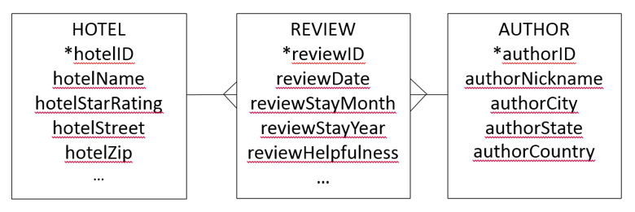
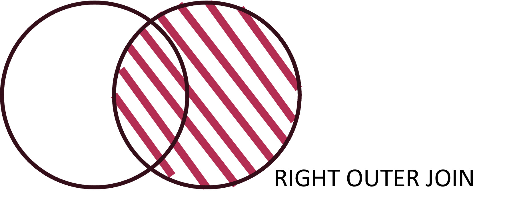
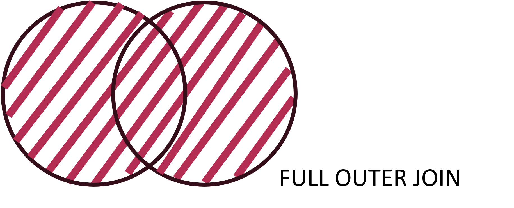
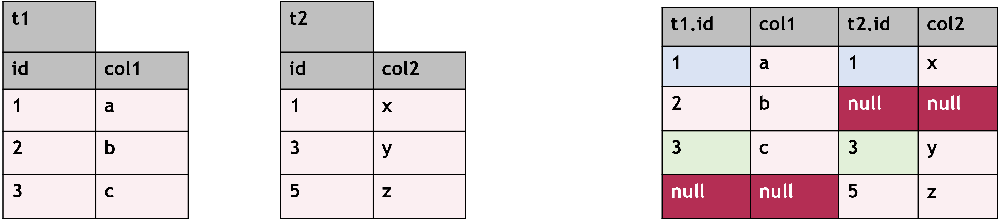

Many-to-Many relationship
Database Modelling
One-to-many relationship will not always be enough to represent all the situations in real life.
A sales form example
A sales form is a document or (digital) record that captures details of a sale, including the products sold, the quantities, the price, the date, and the customer information.
{kind=link}
If you think about it, it would be hard to design a one-to-many relationship for a sales form:
You can sell (conceptually) the same item many times. (E.g. Yesterday you sold two IPhones. Today you also sold an IPhone.)
In one sale, you can sell various products. (E.g. A client bought an Iphone and an IPad.)
To represent this situation in database modeling, we would need a many-to-many relationship between sales and products. This is because a single sale can include multiple products, and the same product can be sold in multiple sales. To model this relationship, a junction table (often called sales_details or order_items) is used, linking the sales table (which stores each transaction) with the products table. This table typically includes fields such as sale_id, product_id, quantity, and price. The many-to-many nature of this relationship allows for flexibility in tracking sales history and inventory management.
Implementing many-to-many
In a many-to-many (m:m) relationship, a third entity is required to properly map the connection between the two related entities. This third entity, known as an associative entity, acts as a bridge between them.
{kind=link}
In database modeling, the associative table includes two foreign keys, one for each of the entities in the m:m relationship, ensuring that each instance of the relationship is properly recorded. Additionally, a foreign key can also be part of the primary key of the associative entity.
{kind=link}
For example, in a sales database, a LINEITEM table is used to associate SALE and PRODUCT. The LINEITEM table is identified by concatenating lineno and saleno, as indicated by the + on the crow’s foot notation. This structure ensures data integrity and enforces the same relational rules as any other table in the database.
As you already know the concepts related to the implementable model, let’s take a look at many-to-many model:
{kind=link}
Exercise
Let’s go back to our hotel database. So far it was a fairly simple database. However, its’ main purpose is not to track hotels. It stores data about hotel reviews, scraped from the Internet.
{kind=link}
How would you model the following scenario? - An author can write reviews about many hotels. - A hotel can have reviews written by many authors.

Database Manipulation
So far, we’ve learned how to join tables using the WHERE clause—this is known as an implicit join.
Implicit JOIN (OR “Comma syntax” JOIN)
SELECT ... FROM ..., ... WHERE fk = pk;
SELECT * FROM table1, table2 WHERE table1.id = table2.id;
While implicit joins work, SQL also provides a more structured way to combine tables: explicit joins using keywords like JOIN ... ON.
The key difference is that implicit joins mix filtering (WHERE) with table relationships, making queries harder to read as they grow. Explicit joins, on the other hand, separate the logic of joining tables from filtering rows, improving readability and maintainability.
Explicit JOIN
SELECT ... FROM ... JOIN ... ON fk = pk;
SELECT * FROM table1 JOIN table2 ON table1.id = table2.id;
Different join syntaxes exist because SQL is designed to be flexible. In some cases, explicit joins provide better performance and clarity, especially when dealing with complex queries or different types of joins (we will see them later).
There many ways to JOIN tbles in SQL. All these methods are called Equijoin.
Compare These queries:
SELECT * FROM brand, lodgingchain WHERE brand.chainId = lodgingchain.chainId;SELECT * FROM brand JOIN lodgingchain ON brand.chainId = lodgingchain.chainId;SELECT * FROM brand NATURAL JOIN lodgingchain;SELECT * FROM brand JOIN lodgingchain USING(chainId);Three table join
List the authors that have reviewed hotels. Report the author name, the hotel ID and the name of the hotels. Order the output by author name.
Use all four methods
implicit JOIN (WHERE)
SELECT authorNickname, hotel.hotelId, hotelName
FROM author, review, hotel
WHERE review.authorId = author.authorId
AND review.hotelId = hotel.hotelId
ORDER BY authorNickname;NATURAL JOIN
SELECT authorNickname, hotelId, hotelName
FROM author
NATURAL JOIN review
NATURAL JOIN hotel
ORDER BY authorNickname;JOIN … USING
SELECT authorNickname, hotelId, hotelName
FROM author
JOIN review USING(authorId)
JOIN hotel USING(hotelId)
ORDER BY authorNickname;
JOIN … ON
SELECT authorNickname, hotel.hotelId, hotelName
FROM author JOIN review JOIN hotel
ON hotel.hotelId = review.hotelId
AND review.authorId = author.authorId
ORDER BY authorNickname;Notes
NATURAL JOIN
- Join on “same” column (name and data type)
- Risky: the condition is implicit
USING()
- Explicitly specifies columns in the equijoin
- Allows multiple (comma separated) columns
ON
- The ON clause enables multiple conditions
- Logical operator can be used to combine condition
- ON and USING are mutually exclusive
- ON enables inequality joins (Theta JOIN – more later)
JOIN Variations
So far, you’ve learner about INNER JOIN, which is the JOIN that returns only the rows that have matching values in both tables based on a specified condition. It eliminates unmatched rows from both tables, ensuring that only records with a relationship between them appear in the result set.
However, there are different JOINS too. An OUTER JOIN is a powerful SQL feature used when you want to retain “dangling tuples”—rows that don’t have a match in the other table. Unlike inner joins, which only return matching records, outer joins ensure that unmatched rows from one or both tables are included in the results. These missing values are padded with NULLs based on the type of outer join used.
- A
LEFT OUTER JOINreturns all rows from the left table, along with matching rows from the right table. If there’s no match, NULLs are used for the right table’s columns.
{kind=link}
SELECT * FROM t1 LEFT OUTER JOIN t2 USING (id);
- A
RIGHT OUTER JOINdoes the opposite—it keeps all rows from the right table and includes matching rows from the left table, filling in NULLs when no match is found.

{kind=link}
SELECT * FROM t1 RIGHT OUTER JOIN t2 USING (id);
- A
FULL OUTER JOINincludes all rows from both tables, ensuring that even non-matching rows from either table appear, with NULLs where data is missing.


SELECT * FROM t1 RIGHT OUTER JOIN t2 USING (id);
Outer joins are especially useful for analyzing incomplete data, maintaining records even when relationships are not fully established, and ensuring that no important information is lost in queries.
Exercise
Provide a list of all chain names and their respective brands. Order the list by chain name.
Tip: Keep in mind that not all chains have sub-brands.
SELECT chainName, brandName
FROM lodgingchain LEFT OUTER JOIN brand USING(chainId)
ORDER BY chainName;Extra practice cell
That’s it for this lesson on SQL joins! Understanding how to combine data from multiple tables is a crucial skill for making informed business decisions. Whether you’re analyzing sales trends, tracking customer behavior, or managing inventory, SQL joins help you unlock valuable insights from your data. As you continue learning, you’ll discover even more ways to refine and optimize your queries. Keep practicing, and soon, you’ll be confidently using SQL to drive smarter business strategies! 🚀

Images and GIFs Disclaimer: Some of the images and GIFs used on this website are not owned by me. They are used for educational and illustrative purposes only. All rights belong to their respective owners. If you believe any content violates copyright, please contact me for prompt removal.